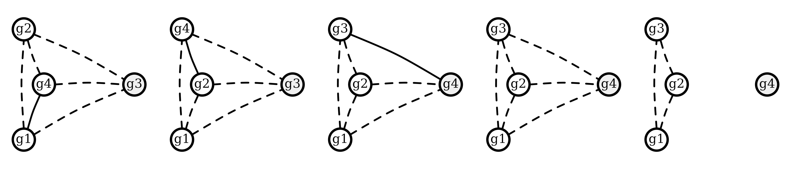
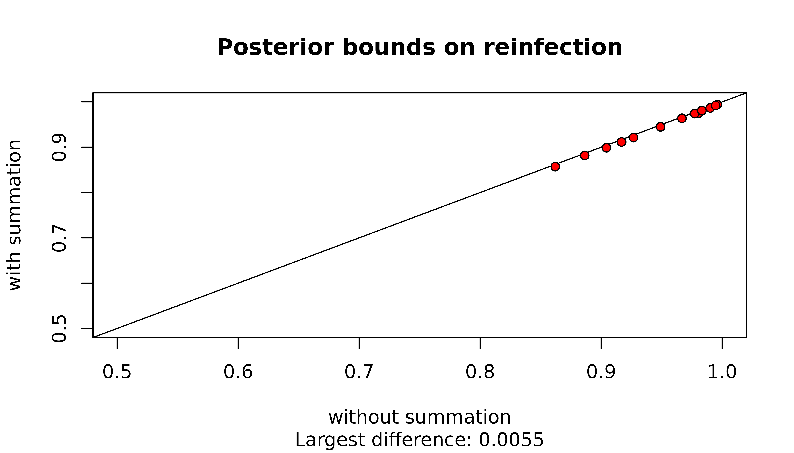
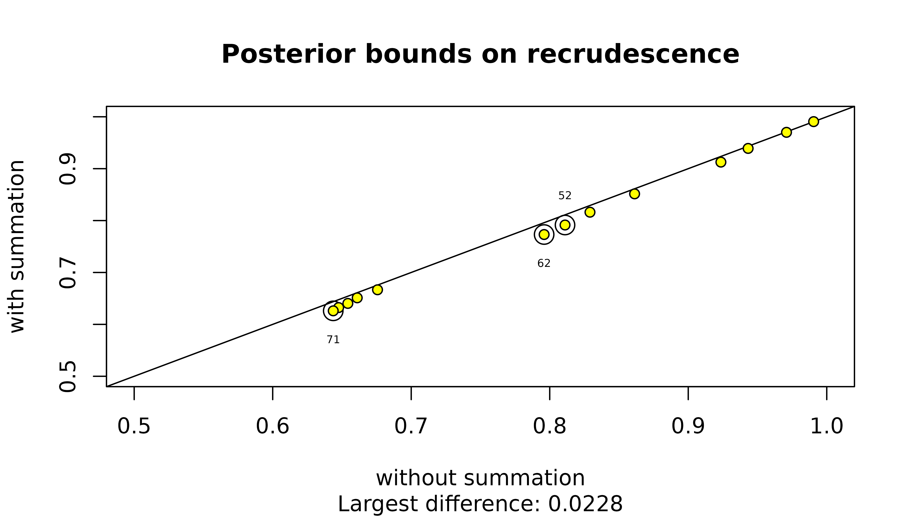

Understand intra-episode siblings
Source:vignettes/intra-episode-siblings.Rmd
intra-episode-siblings.RmdThis vignette expands upon a digression in Understand posterior probabilities.
compute_posterior() sums over graphs with cliques of
three or more intra-episode siblings whenever the MOIs used
contain values that exceed two. However, these graphs only acquire
non-zero likelihoods if the user specifies MOIs that also
exceed the diversity in the data y.
In any case, when MOI estimates are based on bulk parasite genetic data (i.e., not single-cell data), groups of three or more non-half intra-episode siblings collapse to groups of two (i.e., groups of three or more non-half intra-episode siblings have no practical support) because:
MOI estimates based on maximum per-marker allele counts cannot exceed two for groups of three or more non-half siblings, because groups of non-half siblings can draw from at most two parental alleles per marker.
MOI estimates based on heteroallelic marker counts likely don’t exceed two because the heteroallelic marker counts of groups of three or more non-half siblings cannot exceed that of the two parental genotypes from which they derive.
Example of a group of four intra-episode siblings collapsing to two
Before demonstrating how intra-episode sibling groups collapse to pairs, we write a function to simulate data on 200 markers all with the same user-specified allelic richness (marker cardinality) for an enrolment episode comprising a stranger plus a group of four siblings, two from one oocyst, two from another, all drawing from the same two unrelated parental genotypes, and a recurrence with one sibling. Technically, the enrolment episode contains five genetically distinct genotypes and thus has a MOI of five.
simulate_data <- function(marker_cardinality){
# Magic numbers / quantities
set.seed(5) # For reproducibility
n_markers <- 200 # Number of markers
n_strangers <- 3 # Number of stranger parasites
n_oocysts <- 2 # Number of oocysts to draw from
# Derived quantities
alleles <- letters[1:marker_cardinality]
markers <- paste0("m", 1:n_markers) # Marker names
# Uniform allele frequencies
fs <- sapply(markers, simplify = FALSE,
function(m) setNames(rep(1/marker_cardinality, marker_cardinality), alleles))
# Sample strangers
strangers <- sapply(1:n_strangers, function(i) {
sapply(markers, function(t) sample(names(fs[[t]]), size = 1, prob = fs[[t]]))
})
# Designate strangers
parents <- strangers[, 1:2]
# Map the markers to chromosomes. Assume equally sized chromosomes — reasonable
# if and only if we later assume an equal number of crossovers per chromosome
chrs_per_marker <- round(seq(0.51, 14.5, length.out = n_markers))
# Sample parental allocations dependently per-oocyst
cs <- lapply(1:n_oocysts, function(o) recombine_parent_ids(chrs_per_marker))
# Construct children from parental allocations
all_children <- lapply(1:n_oocysts, function(o) {
oocyst_chidren <- sapply(1:n_markers, function(i) {
sapply(1:ncol(cs[[o]]), function(j) parents[i,cs[[o]][i,j]])
})
colnames(oocyst_chidren) <- markers
return(oocyst_chidren)
})
# Make enrolment infection
enrol <- apply(rbind(all_children[[1]][1:2,],
all_children[[2]][1:2,],
strangers[,3]), 2, unique, simplify = F)
# Make paired data
data <- list(enrol = enrol, recur = as.list(all_children[[1]][1,]))
return(list(data = data, fs = fs))
}However, MOI estimates based on maximum per-marker allele counts are three and one when markers are polyallelic:
polyallelic <- simulate_data(10)
determine_MOIs(polyallelic$data)
#> [1] 3 1And two and one when markers are biallelic:
biallelic <- simulate_data(2)
determine_MOIs(biallelic$data)
#> [1] 2 1Suppose we estimate MOIs of 3 and 1 for the biallelic data using an
external software that exploits heteroallelic marker counts, and input
those external estimates into compute_posterior().
Providing data are simulated on a large number of markers (200 above),
we recover almost exactly the same posterior probabilities using both
the
- polyallelic data without user-specified MOIs
- biallelic data with user-specified MOIs of three and one
ppost <- suppressMessages(compute_posterior(y = polyallelic$data,
fs = polyallelic$fs,
return.logp = T))
bpost <- suppressMessages(compute_posterior(y = biallelic$data,
fs = biallelic$fs,
MOIs = c(3,1), return.logp = T))
ppost$marg
#> C L I
#> recur 0.6666667 0.3333333 2.708985e-116
bpost$marg
#> C L I
#> recur 0.6666663 0.3333337 4.625927e-18However, the following graphs, which have cliques of three intra-episode siblings, have zero likelihood given the polyallelic data:

Whereas, all relationships have non-zero likelihood given the biallelic data:
llikes <- sapply(bpost$RGs, function(RG) RG$logp) # Extract log likelihoods
any(is.infinite(llikes)) # Are there any minus infinity log likelihoods?
#> [1] FALSEContribution to upper bounds
The summation over graphs with cliques or three or more siblings is possibly redundant given these graphs have no practical support. Even when these graphs have zero likelihood, they contribute to maximum probabilities of recrudescence / reinfection through the conditionally uniform prior on graphs. However, for upper bounds on the probability of reinfection / recrudescence given a single recurrence the contribution is very small, especially for reinfection:


For recrudescence, 3 MOI vectors (circled in the plot above) result in an absolute difference greater than 0.0175. They are those that feature large MOIs (MOI vectors 5 2 , 6 2 , 7 1 ) and thus those whose graph spaces include graphs with the largest cliques of intra-episode siblings.
The contribution is likely even smaller for all vectors of three or more MOIs that are computationally feasible under Pv3Rs, because their constituent MOIs are necessarily less than 7 (recall that computationally feasible MOI vectors are those that sum to at most eight).